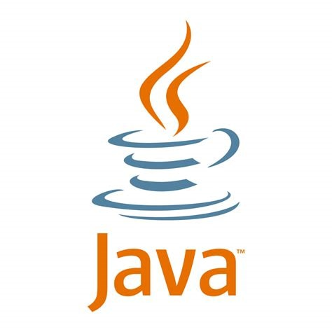
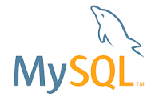
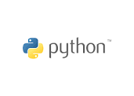

Helin Yilmaz
Los Angeles, CA
University of Southern California
Email: hnyilmaz@usc.edu
LinkedIn: Profile
Phone: (650) 522-0475
Objective
Currently pursuing a dual B.A. in Data Science and Health & Human Sciences at the University of Southern California. Seeking an internship to display my passion for data science and analytics through programming. I hope to implement my knowledge from courses taken at USC and my experience in healthcare research conducted at the university.
Education
University of Southern California | Los Angeles, CA
B.A. Data Science | Viterbi School of Engineering
B.A. Health & Human Sciences | Dornsife College of Letters, Arts, & Sciences
Burlingame High School | Burlingame, CA
High School Valedictorian
Experience
Learning Assistant In-Training
USC Information Technology Program (ITP)
- Support students in the Information Technology Program (ITP) course titled "Object-Oriented Programming" with assignments
- Brainstorm alternative assignments for the curriculum to encourage classroom engagement
Undergraduate Research Assistant
USC Sol Price School of Public Policy
- Conducted research by gathering data on health insurance premiums and deductibles to provide transparency on health insurance costs in the state of California
- Produced visual representations of collected data and wrote issue briefs to share insights
Clinic Intern, Committee Representative for Data Analytics/Information Investigation
Harm Reduction Los Angeles
- Evaluated and implemented appropriate data collection methods for Harm Reduction Clinic patients, including research methods and analysis, medical records, clinic forms, and questionnaires
- Contributed to a literature review and analysis of current Harm Reduction clinics globally
First-Generation Student Mentor
USC First Generation Student Union
- Monitored progress and assisted a fellow first-generation student in taking full advantage of the many resources USC has to offer, including scholarships, internships, clubs, and the like.
- Mentored younger students and shared resources to improve their academic and career-oriented skills
Skills
Languages
- English (Native)
- Turkish (Native)
- Spanish (Proficient)
- Azerbaijani (Proficient)
Data Science and Design
- MySQL
- MATLAB
- KNIME
- R
- RapidMiner
- Weka
Computer Programming

- Java
- Python
- HTML
- CSS
Apple Search Ads Certification